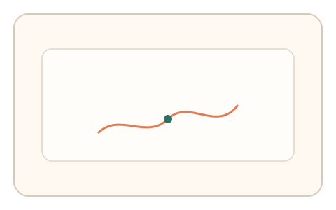
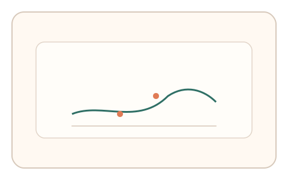
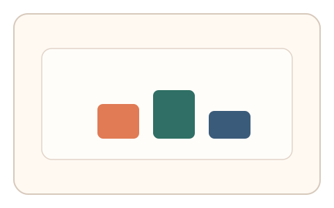

#150
Reverse Brainstorming - Round 1
已扩展
无答案验证
将判定从“正确答案”转向连续行为信号，任务结果不作为主要依据。
概念原文
将验证核心从“正确答案”转为“交互行为特征”，只评估动作曲线/时序/适应过程等连续信号，任务结果本身不作为主要判定依据。
让“答案”失去意义，AI 解题能力不再是决定性因素。
研究背景
行为特征可形成稳定的人机差异，即使任务结果被猜中，轨迹、时序与纠偏仍能体现真实操控。以行为信号为核心可降低解题能力带来的风险。
核心机制
- 设计开放式或弱约束的交互任务。
- 高频采集轨迹、时序与微纠偏。
- 构建多信号一致性判定。
- 任务结果仅作为辅助参考。
用户流程
- 步骤 1：用户完成开放式交互任务。
- 步骤 2：系统采集连续信号。
- 步骤 3：系统基于行为分布判定。
判定信号
轨迹微抖动与速度曲线
生理噪声与纠偏反映真实在场。
反应时与纠偏模式
真实用户存在试探与回拉过程。
判定逻辑
多信号需落在人类分布区间；过度完美或过度随机判异常。
对抗面
- 模型拟合人类分布生成轨迹
- 重放真实用户信号
防御与缓解
- 动态生成任务参数
- 多信号耦合并交错任务
- 风险分级与二次校验
可达性与风险
保持低负担并提供等效替代通道。
- 信号过于依赖设备采样率
- 行为分布漂移导致误判
可视化状态

状态 1：开放任务
任务结果不设唯一答案。

状态 2：信号采集
采集轨迹与时序信号。

状态 3：多信号判定
以行为分布为核心判定。
参考资料
Behavioral biometrics
说明行为特征作为识别信号。
CAPTCHA
说明验证码的人机差异基础。